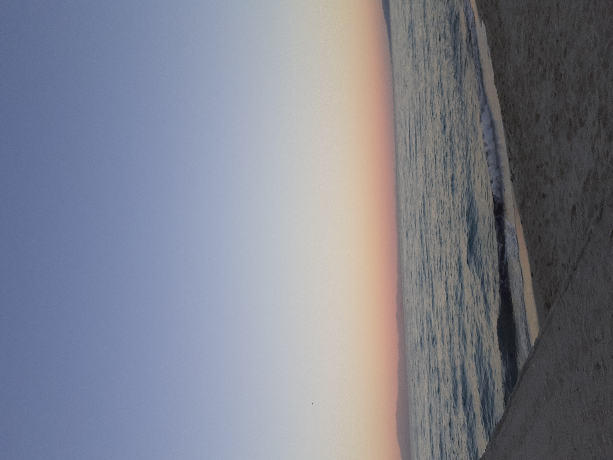
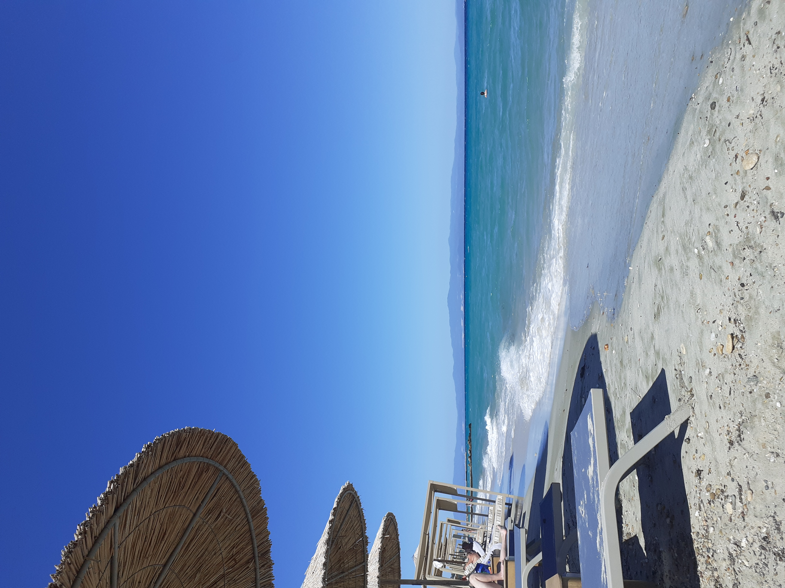
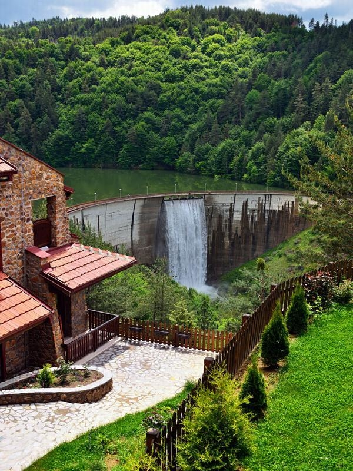
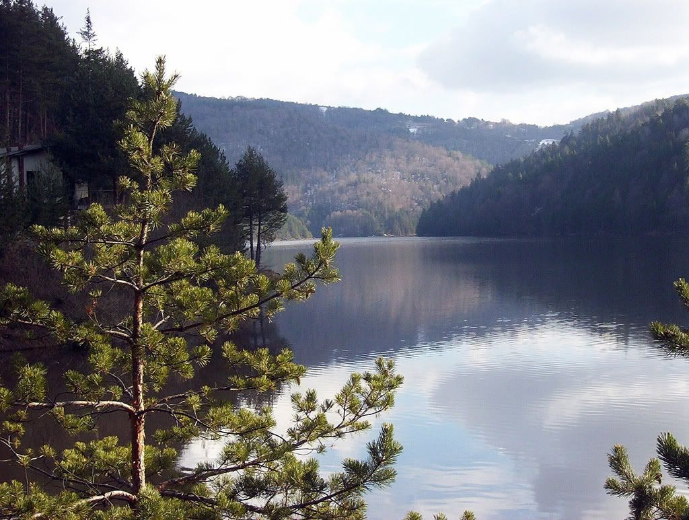
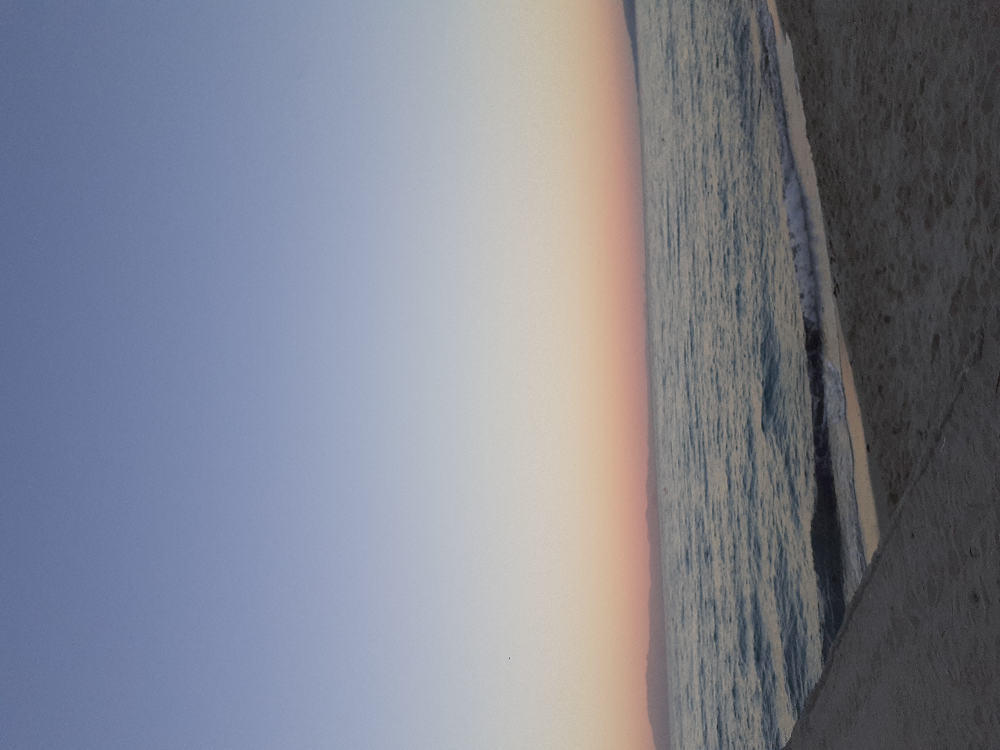
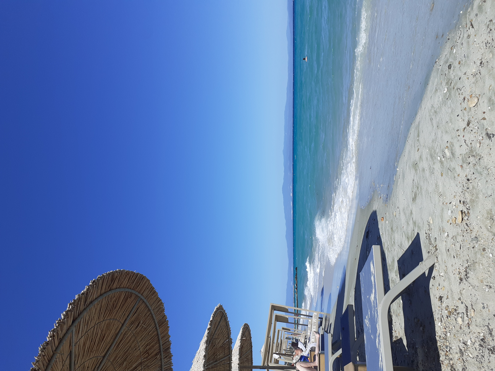
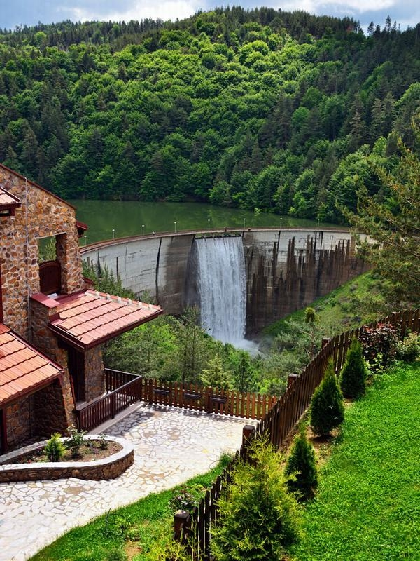
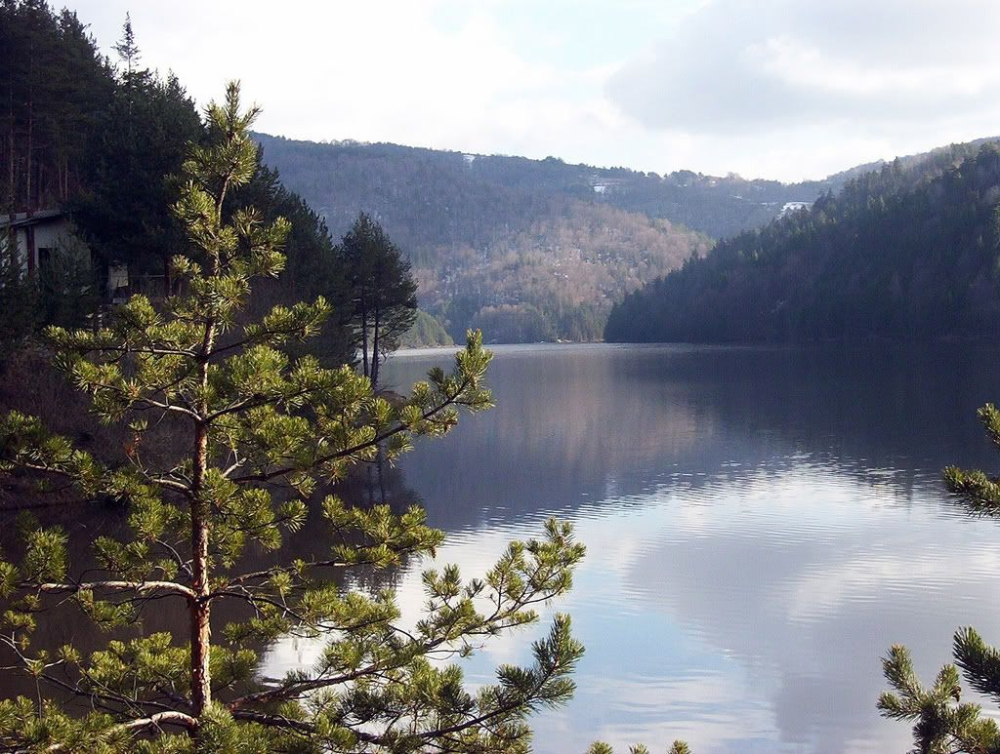
this text is hidden
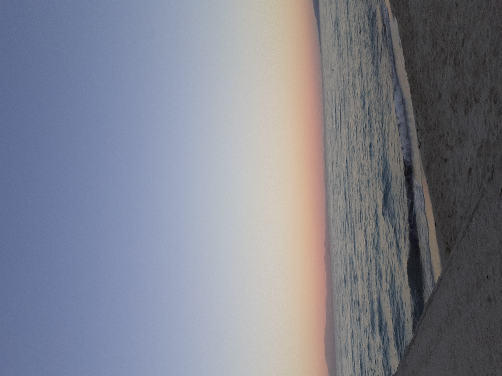
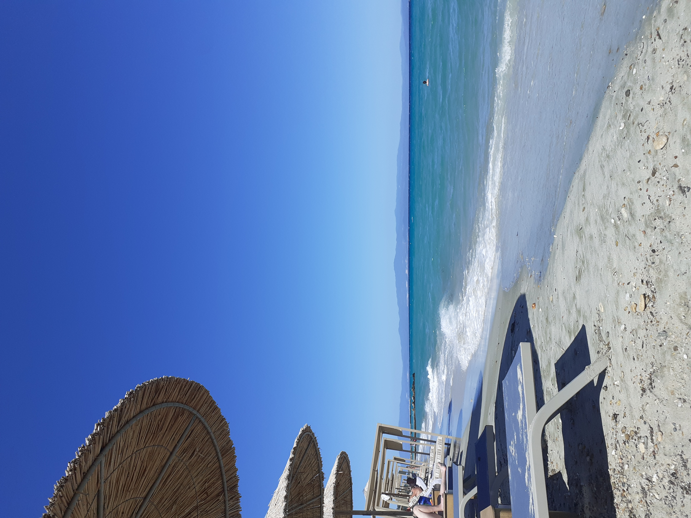
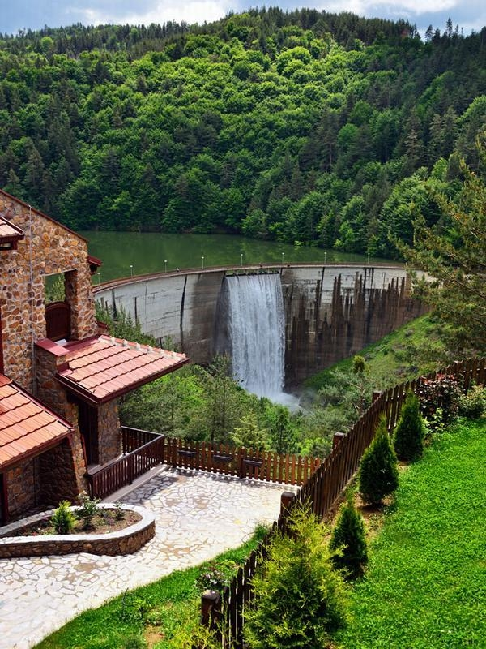
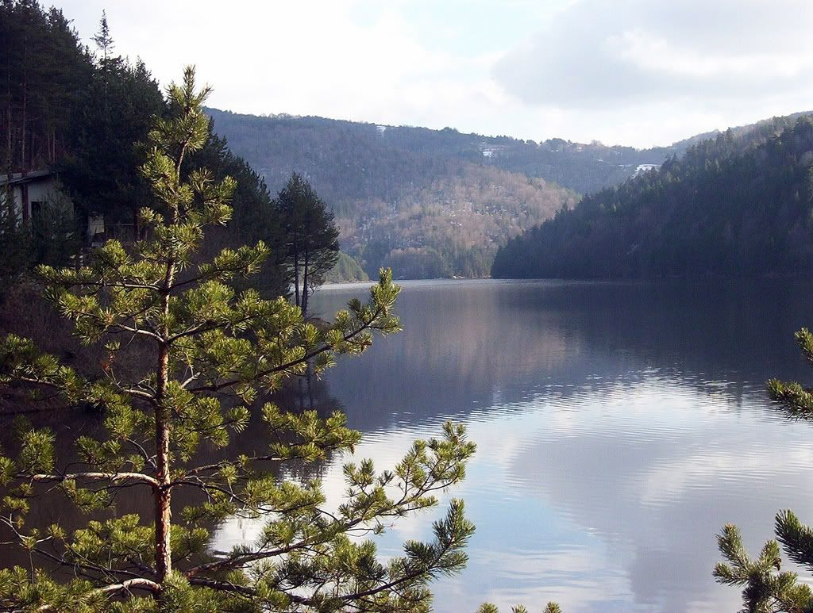
Afytos Afytos, also known as Athitos, is a charming village nestled atop a hill. It offers breathtaking views of the azure waters below, complemented by a beloved beach that attracts many visitors. At the heart of the village lies the Agios Dimitrios church. Along the cliffs and shoreline, one can find a delightful array of Macedonian restaurants and inviting sea-view bars, adding to the village's allure.
Kalithea Kallithea gracefully gazes upon a collection of pebble beaches nestled within intimate coves, adorned with natural rock pools. Constructed in 1929, the Kallithea Springs bathing area showcases an enchanting Italianate design, accompanied by splendid ornamental gardens. This picturesque location finds its place in a bay that lies between the captivating Kallithea and Kokkini beaches.
Our beautiful Berovo Berovo, situated near the magnificent Maleševo Mountains, is a quaint town located 161 km (100 mi) from Skopje, 47 km (29 mi) from Strumica, and 52 km (32 mi) from Kočani in North Macedonia. Serving as the seat of Berovo Municipality, it is a remarkable mountain destination that provides a breath of fresh air and stunning vistas of the nearby lake, all nestled amidst enchanting woodland surroundings.